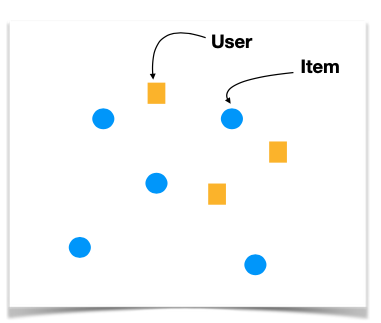

13.2. Content-Based Methods
Let’s start with content-based methods. These are intuitive by nature.
As a company, we construct a comprehensive catalog of our products, ensuring we know how to accurately represent each item. Consider movies or articles, for example; each can be depicted by a multi-dimensional feature vector.
We might describe a movie using features such as its release date, genre, director, and lead actors, and so on. In this way, we construct an item profile, visualizing each item as a distinct point within a multi-dimensional feature space, represented here by blue dots.
{kind=link}
In parallel, we construct a user profile within the same dimensional framework. How? Some platforms might query you directly about your preferences, asking which movies you enjoy. Others infer this from your viewing history, analyzing and aggregating the attributes of content you’ve recently engaged with. These profiles are weighted, with recent interactions typically holding more weight. The result is a user profile, represented here by yellow squares.
Now, with both items and users plotted in the same space, we can determine preferences based on proximity. If we have a user surrounded by unwatched items, we recommend the nearest one. It’s a simple yet effective paradigm: map out items and users in a shared space, where closeness equates to preference, allowing us to make tailored recommendations.
One of the advantages of this method is that it doesn’t require any other user’s data to make a recommendation. t’s efficient—we can start offering recommendations from day one, without waiting for extensive user-item interaction data. This model also shines when promoting new or less popular items; it does not discriminate based on an item’s popularity but rather its features. It caters to users with unique tastes, focusing solely on their preferences to identify ideal matches.
Furthermore, content-based methods offer a high degree of transparency. We can easily articulate why an item was recommended based on the specific features that align with a user’s interests.
However, this approach has its limitations. It tends to offer safe, predictable recommendations-essentially offering substitutes rather than complementary items, limiting discovery.
The most challenging aspect, though, is identifying a robust set of features to adequately represent items. Whether it’s for movies, articles, images, or fashion items, each category demands a carefully crafted approach to feature selection.
These limitations lead us to consider other technique, like Collaborative Filtering (CF), which we will discuss next.